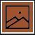
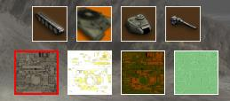
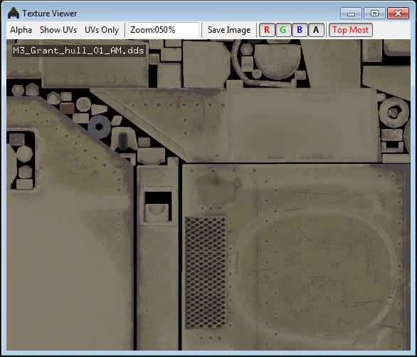
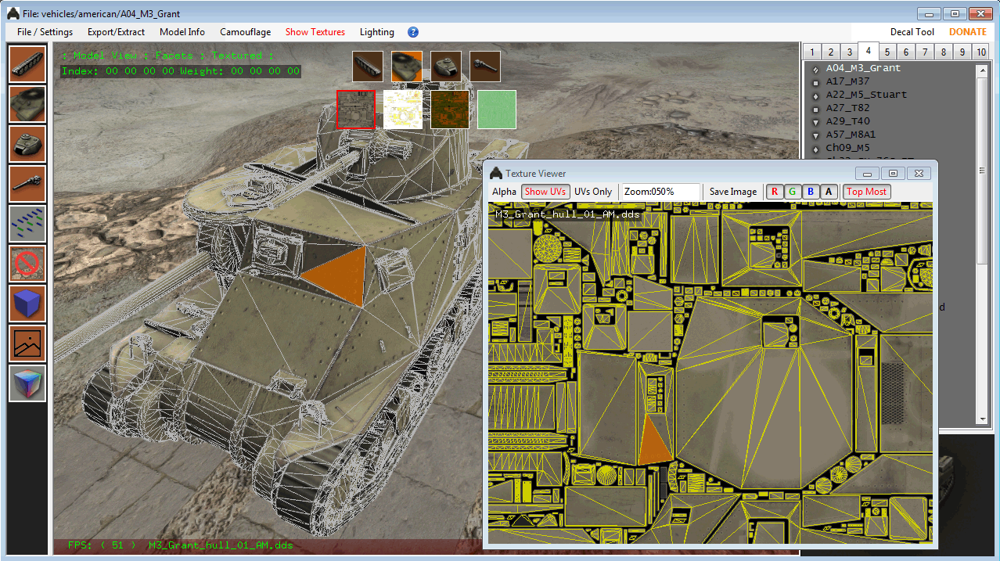

Using Tank Exporters Texture View features.
On the left there is a button that looks like a mountain. |
 |
This will show the four buttons for picking the textures of each tank section.
Clicking on one of the section buttons will show the textures associated with that tanks section.

The order of these textures is:
AM, AO, GMM and ANM .
Albedo Map, Ambient Occlusion, Gloss Metal Map, Albedo Normal Map.
Track sections do not have an AO map. AO levels are stored in the AM maps alpha channel instead.
Clicking on one of the texture buttons opens that texture in the Texture View Window.
|  |
The top menu has a number of buttons that control how the texture looks in the window. Mousing over the tank or in the window while Show UVS or UVs Only is on will show the triangle in the texture window OR on the tank model its self. Here is a basic list of what colors do what in each texture. _AM: |
Here is a GIF showing how mousing over polygons on the tank show in the Texture View Window.
This also works the other way... mousing over triangles in the TV window will show them as red polygons on the tank in the main window.
In the upper left corner, the vertex color and weights are displayed. R,G,B,A values.. Weights are NEVER exported with the FBX as there is no way to do this so far. Hull has no vertex colors or weights.
